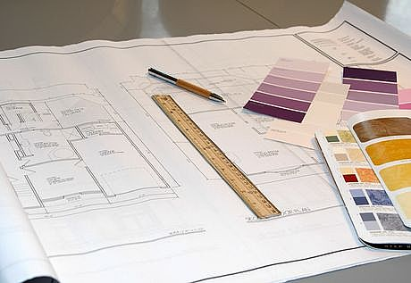

Welcome to 83
Home - Georgiana Ursache Interiors
2020.09.20 21:31Home Despre noi Proiecte Proiecte finalizate Randari 3D Servicii Inainte/Dupa Sfaturi Design Interior Aparitii Media Blog Contact Home Despre noi Proiecte Proiecte finalizate Randari 3D Servicii Inainte/Dupa Sfaturi Design Interior Aparitii Media Blog Contact
Pasiune pentru design interior
Citeste mai multCasa pe care ai visat-o
Citeste mai multHai sa vorbim despre casa ideala!
All Projects Proiecte finalizate 3D Quick ViewAmenajare Apartament in Stil Clasic
Proiecte finalizate Quick ViewAmenajare Garsoniera in Stil Clasic Reinterpretat
Proiecte finalizate Quick ViewAmenajare Apartament 3 Camere in Stil Glamour
Proiecte finalizate Quick ViewAmenajare Apartament 2 camere in Stil Scandinav
Proiecte finalizate Quick ViewAmenajare Apartament 2 Camere pentru Air Bnb
Proiecte finalizate Quick ViewAmenajare Apartament zona Unirii cu Accente Naturale pentru Air Bnb
Proiecte finalizate Quick ViewVictorian Chic – Amenajare de apartament clasică, în centrul Bucureștiului
Proiecte finalizate Quick ViewApartament Timeless Style: simplitate și eleganță în centrul Bucureștiului
Proiecte finalizate Quick ViewAmenajare de Interior pentru AirBnb Four Seasons Flat
Proiecte finalizate Quick ViewApartament Herastrau
3D Quick ViewVila Ferdinand
3D Quick ViewNeutral chic apartamentul modern al unui burlac
Proiecte finalizate Quick ViewDuo mix – modern și industrial într-un apartament din Floreasca
Proiecte finalizate Quick ViewAcasă la doi avocați
3D Quick ViewVilă Pipera
3D Quick ViewBlack & white
3D Quick ViewVerde fresh
3D Quick ViewPractic și estetic
3D Quick ViewFrumusețe clasică
3D Quick ViewDesign de bun-venit
3D Quick ViewClasic în note fresh
3D Quick ViewColour splash
3DDesign de interior Personalizat Solutii de Amenajare Clasica si Moderna
Daca ai ajuns aici, inseamna ca avem deja un lucru in comun: designul interior. Pentru noi, amenajarile de interior sunt mai mult decat o meserie sunt o pasiune care ne contureaza fiecare zi.
Echipa noastra este formata din arhitecti si designeri de interior si, alaturi de echipele de montaj cu care avem o colaborare stransa, ne ocupam de tot ce inseamna amenajare de interior.
Pornim de la o intalnire in care ne cunoastem, dezvoltam impreuna conceptul, realizam schite si vizualizari 3D apoi ne ocupam de implementare si supervizarea lucrarii pe santier.
Toate proiectele noastre imbina partea artistica in solutii functionale. Clientul nostru este sufletul proiectului si scopul nostru este sa il „traducem” in cheie vizuala, intr-un proiect de succes.
Categorii
Architecture Blog Decoration Interior MediaArhiva
July 2019 (4) June 2019 (3) May 2019 (5) April 2019 (4) March 2019 (2) February 2019 (1) January 2019 (1) December 2018 (2) July 2018 (1) May 2018 (1) April 2018 (1) March 2018 (1) August 2017 (2) July 2017 (3) June 2017 (3) May 2017 (1) April 2017 (2) March 2017 (7) February 2017 (3) September 2016 (1) July 2016 (1) March 2016 (1)Postari recente
Camera copilului în stil Montessori sfaturi și idei de amenajare Iluminarea casei cum să folosești corect lumina la interior?Contact
Strada Latina Numarul 14 Bucuresti Romania
Mobile: 0745 865 367
E-mail: office@uginteriors.ro
Luni - Vineri: 10:00 Am - 18:00 Pm
